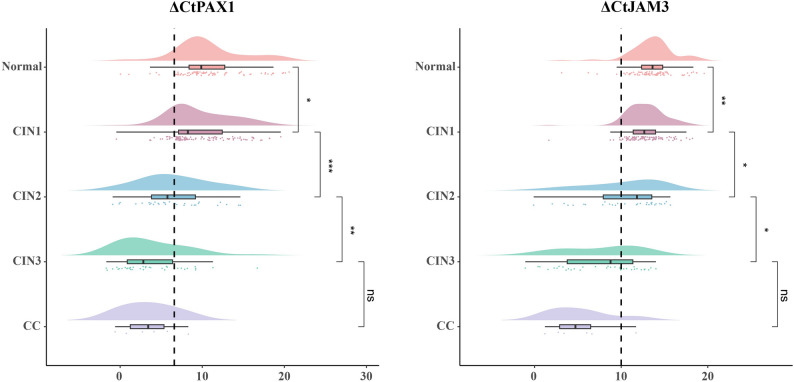
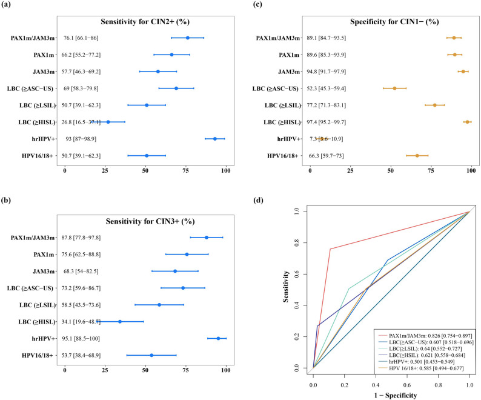
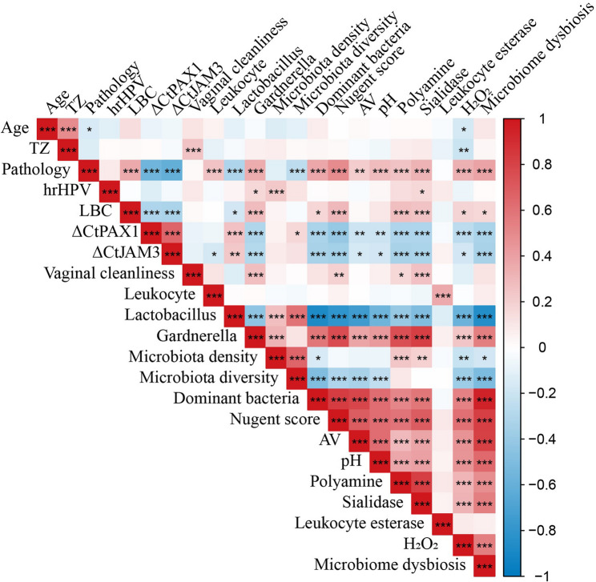

1Background & Objective
- Gap: hrHPV testing is sensitive but very low specificity (7.3% in this cohort) → excessive colposcopy referral.
- Angle: link PAX1/JAM3 methylation with clinically assessed vaginal microecology in colposcopy-referred women.
- Objective: assess CISCER® as molecular triage and its association with vaginal dysbiosis for CIN2+.
2Study Design & Cohort
264
colposcopy-referred women
42y
median age
71
CIN2+
CISCER methylation+
hrHPV / LBC+
vaginal microecology
- Setting: Beijing Anzhen Hospital, Feb–Dec 2024; TZ III 66.7%.
- CIN2+ (n=71): CIN2 42.3% · CIN3 49.3% · SCC 7.0% · AD 1.4%.
- HPV in CIN2+: 93% hrHPV+; HPV16/18 50.7% vs 33.7% in CIN1− (P<0.05).
- Microecology: clinician-evaluated in 172 women (Lactobacillus, Gardnerella, Nugent, pH, AV).
- Baseline: median 42 y; TZ III 66.7%.
- Dysbiosis scores: Nugent, AV, pH, H₂O₂, sialidase, polyamine.
- Scoring: clinician per microecology scoring method (Table S3).
30
CIN2
35
CIN3
6
cancer (5 SCC + 1 AD)
CISCER+ = ΔCt PAX1 ≤ 6.6 or ΔCt JAM3 ≤ 10.0 (Kruskal-Wallis ***P<0.001).
3Diagnostic Performance
0.826
AUC · CIN2+
0.852
AUC · CIN3+
76.1%
Se · CIN2+
89.1%
Sp · CIN2+
91%
NPV · CIN2+
CISCER Sp 89.1% vs hrHPV 7.3% (CIN1−) · CIN3+ Se 87.8% / Sp 82.5% · all SCC & AD positive · normal women: 92.9% hrHPV+ but only 7.1% CISCER+.
4Methylation & Clinical Efficacy

Fig. 2 ΔCt falls with severity — higher methylation in high-grade lesions.

Fig. 3 Se (CIN2+/CIN3+), Sp (CIN1−) & ROC — CISCER best specificity.
- Specificity wins: 89.1% vs hrHPV 7.3%; all SCC & AD methylation positive (cytology missed 4).
5Vaginal Microecology Association

Fig. 4 Correlation heatmap (n=172) — dysbiosis markers track high-grade lesions.
Fig. Dysbiosis markers — positive with CIN2+; Lactobacillus negative (depletion).
- Dysbiosis pattern: Lactobacillus depletion (r=−0.316) & Gardnerella enrichment (r=0.354).
Nugent r=0.499 · ΔCt JAM3 r=−0.607 — both predict high-grade lesions.